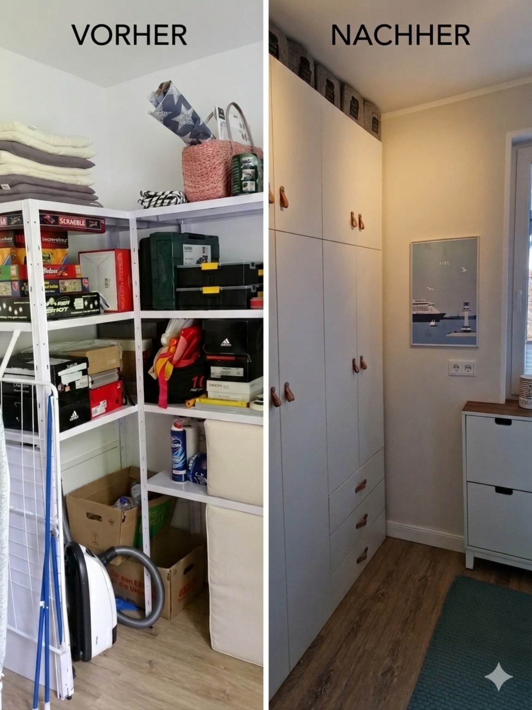
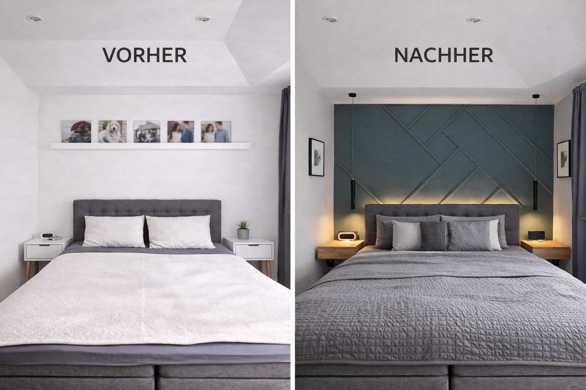
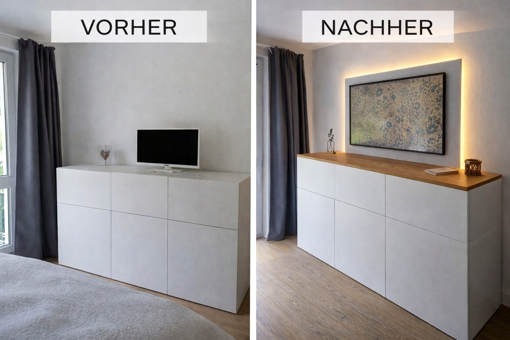
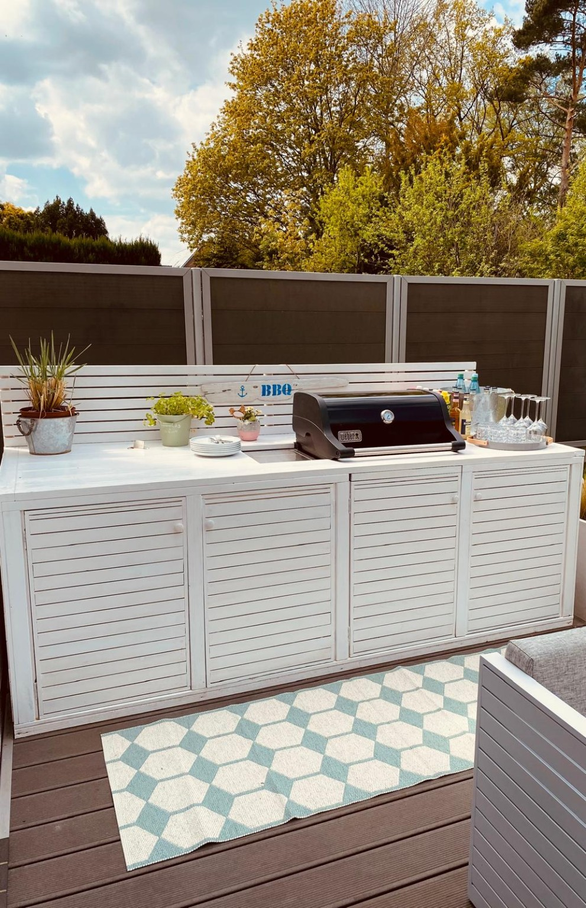

Sitzbank mit Stauraum
Sitzbank mit Stauraum
Aus einem offenen Essbereich entstand ein gemütlicher zentraler Ort im Haus – mit integrierter Sitzbank, viel Stauraum, warmem Holz, versteckter Technik und indirekter Beleuchtung.
Individuelle Lösungen für Räume, Möbel und Außenbereiche in Hamburg.
Mehr erfahrenSeit vielen Jahren entstehen hier DIY-Projekte rund ums Haus – mit Blick für Gestaltung, Funktion und bezahlbare Lösungen. Im Mittelpunkt stehen Räume, die besser funktionieren, wohnlicher wirken und im Alltag wirklich genutzt werden.
Drei Projekte, die zeigen, wie Wohnlichkeit, Struktur und Alltagstauglichkeit zusammenkommen.
Sitzbank mit Stauraum
Aus einem offenen Essbereich entstand ein gemütlicher zentraler Ort im Haus – mit integrierter Sitzbank, viel Stauraum, warmem Holz, versteckter Technik und indirekter Beleuchtung.

Hauswirtschaftsraum mit System
Aus offenen Regalen wurde ein ruhiger, fast wohnlicher Funktionsraum. Geschlossene Schränke, integrierte Waschmaschine und Trockner, Beleuchtung und ein klares Ordnungssystem schaffen Struktur im Alltag.

Schlafzimmer im Hotelstil
Ein helles, eher neutrales Schlafzimmer wurde zu einem warmen Rückzugsort mit dunkler Akzentwand, Leistenstruktur, indirektem Licht, schwebenden Nachttischen und ruhiger Hotelatmosphäre.
Eine kompakte Auswahl, die Stimmung, Material und Raumwirkung zeigt.




Licht, versteckte Technik, Stauraum und der Materialmix aus Holz, Grau, Weiß und Salbei.
Licht
Indirektes Licht schafft Tiefe und eine zeitlose Stimmung.
Technik
Steckdosen, Ladezonen und Kabelmanagement werden bewusst unsichtbar geplant.
Stauraum
Mehr Platz entsteht durch durchdachte Einbauten statt zusätzlicher Möbel.
Materialmix
Holz, Grau, Weiß und Salbei wirken gemeinsam warm und hochwertig.
Ich bin kein gelernter Handwerker. Alles ist über Jahre aus eigenen Projekten entstanden – mit Neugier, Liebe zum Detail und dem Wunsch, Räume schöner, praktischer und bezahlbarer zu lösen.
Dieses Portfolio ist privat geteilt. Wenn Sie einen Austausch wünschen, schreiben Sie bitte eine kurze Nachricht.